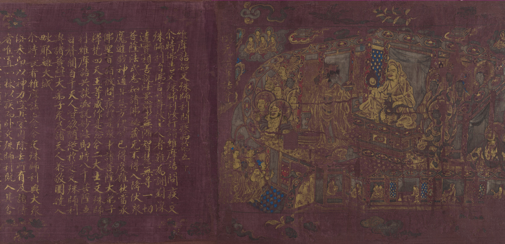

8 L’insegnamento di Vimalakīrti
Introduzione
Vivere una buona vita, una vita sana, spensierata e ben consapevole delle realtà che deve affrontare, dipende dallo sviluppo di determinate abilità. La principale raccomandazione buddista a questo proposito è quella di coltivare alcune capacità spendibili nella vita quotidiana. Tali capacità richiedono una chiara percezione della situazione in cui ci troviamo e un costante allenamento mentale atto ad evitare “i tre veleni” dell’avidità, dell’odio e dell’illusione. La metafora utilizzata dai buddisti per questo modo di vivere è quella di un “percorso” che può essere esplorato da chiunque speri di rispondere alle sfide della vita con una maggiore saggezza e abilità.
Sono state presentate molte versioni del percorso che fornisce ai buddisti guida e direzione. Un testo sacro per i buddisti, il Vimalakīrti Sūtra, offre diverse descrizioni di percorsi validi e mostra come diversi tipi di persone sono in grado di applicare i “mezzi abili” (upāya) per affrontare le vicende della vita. In questo capitolo farò riferimento alla lettura di questo Sūtra fornita da Dale S. Wright (2022) nel suo libro Living skillfully.

8.1 Vimalakīrti nella vita quotidiana
Il secondo capitolo del sutra è dedicato alla descrizione del carattere di Vimalakīrti e rappresenta uno dei grandi testi della letteratura buddista. Questo capitolo è eccezionale nella letteratura buddista in quanto si concentra sulla descrizione del carattere di qualcuno che non ha preso i voti monastici, ma che comunque conduce una vita buddista esemplare. Vimalakīrti viene presentato nel secondo capitolo del Sutra come un cittadino ricco e di spicco della città di Vaiśālī in India, noto per la sua comprensione superiore degli insegnamenti buddisti, la sua compassione per tutti gli esseri viventi e la sua eloquenza. I seguenti sono esempi dei tipi di tratti caratteriali che il Sutra gli attribuisce:
II:4. Per conformarsi al mondo, egli frequentava i grandi, i mezzani ed i minori, ma parlava loro conformemente alla Legge. Intraprendeva ogni sorta d’affari, ma era disinteressato al guadagno ed al profitto. Per disciplinare gli esseri, si mostrava nelle piazze e nei crocevia, e, per proteggere gli esseri, esercitava le funzioni reali. Per allontanare gli adepti del Piccolo Veicolo ed attirare gli esseri verso il Grande Veicolo, compariva tra gli Uditori ed i predicatori della Legge. Per far maturare i fanciulli. entrava in tutte le sale di scrittura. Per esporre gli inconvenienti della lussuria, penetrava in tutti i bordelli. Per ricondurre gli ebbri all’attenzione giusta ed al sapere corretto, entrava in tutti i cabarets.
II:.5 Poiché dava el regole migliori, egli era riconosciuto come banchiere fra i banchieri. Poiché annientava alla sua liberalità l’avidità dei postulanti, era riconosciuto come capo di casa fra i capi di casa. Poiché inculcava al sopportazione, la risoluzione e al forza, era riconosciuto come guerriero fra i guerrieri. Poiché aveva distrutto l’orgoglio, la vanità e l’arroganza, era riconosciuto come brahmano fra i brahmani. Poiché insegnava il modo di esercitare le funzioni reali conformemente alle leggi, era riconosciuto come ministro fra i ministri. Poiché combatteva l’attaccamento ai piaceri reali e all’esercizio del potere, era riconosciuto come principe fra i principi. Poiché ammaestrava le giovinette, era riconosciuto come eunuco nell’interno dell’harem.
II:6. Poiché faceva altamente apprezzare i meriti ordinari, egli era in armonia colla gente comune. Poiché proclamava al precarietà del potere, era riconosciuto come Sakra fra i Sakra. Poiché insegnava loro il sapere per eccellenza, era riconosciuto come Brahma fra i Brahma. Poiché faceva maturare tutti gli esseri, era riconosciuto come Lokapala fra i Lokapala.
Questi tratti descrivono solo alcune delle qualità che vengono attribuite a Vimalakīrti. Nel Sutra, per descrivere la traiettoria più alta della pratica buddista, l’autore ci presenta un “ideale laico”. Vale la pena sottolineare che ciò che vediamo in questo esempio non è la descrizione di una norma o di un risultato che possiamo aspettarci di vedere tra i buddisti, ma piuttosto la descrizione di un ideale. È una domanda aperta, se un monaco, una monaca o un laico buddista sia mai stato veramente all’altezza di questo ideale. Questa è una domanda storica su cosa sia effettivamente accaduto nella storia delle società buddiste. La nostra domanda qui, però, non è tanto come le persone abbiano vissuto nelle società buddiste, quanto piuttosto cosa i buddisti siano stati in grado di immaginare quale ideale più alto dell’eccellenza umana. Ricordiamo che gli ideali sono proiezioni culturali che mutano nel tempo – un’altra volta, niente di fisso e immutabile. Inoltre, gli ideali sono, per definizione, irraggiungibili. Avere un ideale ci fornisce però uno strumento per valutare il divario tra chi siamo attualmente e ciò che potremmo essere.
Nel caso di Vimalakīrti, in qualche modo in contrasto con gran parte della tradizione buddista precedente, ciò che viene presentato è un ideale di mondanità. Piuttosto che seguire il percorso buddista monastico, e ritirarsi dal disordine e dall’assenza di virtù del mondo, Vimalakīrti si tuffa nel mondo e lo usa come base della propria pratica. È raffigurato, contrariamente a gran parte della tradizione buddista precedente, mentre trascorre del tempo con giocatori d’azzardo, prostitute, ubriachi e imbroglioni, oltre a bambini, funzionari governativi, poliziotti e senzatetto. In mezzo a loro mantiene equanimità, equilibrio, saggezza e, soprattutto, compassione. Quando è impegnato in affari, mostra cosa significherebbe condurre affari in piena consapevolezza dell’impermanenza di tutte le cose e dell’assenza del desiderio di un vantaggio personale. Quando è in contatto con qualcuno, la domanda davanti alla sua mente è: come posso aiutare questa persona ad aprirsi a una visione più ampia e a una forma di vita in cui possa prosperare senza soffrire? L’aspirazione che guida le sue attività è quella di una trasformazione del mondo e, in vista di questo obiettivo, sorride semplicemente con tenerezza quando il resto di noi gli passa davanti, immerso nelle sue attività meschine ed egoistiche. Come modello di vita illuminata, Vimalakīrti è un personaggio sorprendente.
8.1.1 La pratica delle sei perfezioni
Cosa fa Vimalakīrti, secondo il Sutra, per sviluppare e sostenere questo livello di magnanimità? Pratica le “sei perfezioni”, un insieme di ideali articolati nella maggior parte dei primi sutra buddisti Mahayana come base per la vita del bodhisattva. Il Vimalakīrti sūtra introduce questi sei ideali in sei frasi: una per ciascuna delle perfezioni della generosità, della moralità, della tolleranza, dell’energia, della meditazione e della saggezza.
II:2 Per cattivarsi gli operai e i poveri, disponeva egli di riccheze inestinguibili; per cattivarsi gli esseri immorali, osservava una moralità pura; per cattivarsi gli esseri crudeli, molto crudeli, violenti e collerici, era pieno di sapienza e di padronanza di sé; per cattivarsi gli esseri accidiosi, era di un’energia estrema; per cattivarsi gli esseri distratti, manteneva la concentrazione, il raccoglimento e la meditazione; per cattivarsi gli esseri stolti (coloro di poca comprensione), possedeva una ferma saggezza.
Questa stessa sequenza di sei perfezioni appare in tutto il sutra. Vimalakīrti si sforza di perfezionare la sua generosità, la sua moralità, la sua tolleranza, la sua energia, la sua meditazione e la sua saggezza. Perché pratica queste forme di auto-trasformazione? Ciò che Vimalakīrti cerca non è tanto la “sua” generosità, la “sua” moralità e così via, ma lo sviluppo di generosità, moralità, pazienza, energia, meditazione e saggezza nella società stessa e tra tutti gli esseri umani. Questo è il suo obiettivo, quasi come se non ci fosse davvero un sé che dovrebbe essere o potrebbe essere al centro della sua attenzione. Pensando, come dovrebbero fare i buddisti, che tutte le cose cambiano, comprese le persone, e che tutti questi cambiamenti sorgono in base a varie condizioni e cause alterabili, Vimalakīrti procede come se il suo stesso impegno in questo modo di procedere possa cambiare gli altri e il mondo, anche se solo in modo incrementale. Trasformare se stesso e trasformare il mondo sono così strettamente legati da essere praticamente la stessa attività.
Nel Sutra è espressa una notevole preoccupazione riguardo alla qualità delle nostre aspirazioni: cosa cerchiamo nella vita? A meno che le nostre aspirazioni non dimostrino una profonda comprensione dell’impermanenza di tutte le cose, l’inter-dipendenza di tutte le cose, e la mancanza di una natura essenziale del sé, il nostro giudizio sarà insufficiente, saremo insicuri e finiremo per cercare qualcosa che, in definitiva, è indegno dei nostri sforzi. Pertanto il Sutra assegna un’enorme importanza al tema della qualità delle proprie aspirazioni.
Un “nobile” obiettivo non può essere raggiunto se manifestiamo un atteggiamento arrogante. Vimalakīrti rifiuta di separarsi dai cittadini più poveri e umili, perché, in base ai principi buddisti che abbiamo qui introdotto, semplicemente non sono separati. Le azioni di Vimalakīrti che colpiscono di più mostrano la padronanza di ciò che il Sutra chiama “non dualità”, il riconoscimento che alla fine non ci sono sé separati e distinti, e che ciò che ognuno di noi diventa nella vita dipende dalle vite e dalle azioni degli altri. In questo quadro più ampio, i nostri risultati non sono solo i nostri risultati individuali: ciò che otteniamo nella vita non può essere compreso attraverso concezioni “dualistiche” che distinguono nettamente i risultati che abbiamo ottenuto e il contributo che gli altri hanno dato a questi risultati.
Pertanto, quando Vimalakīrti cerca di illuminare le persone che mostrano deboli aspirazioni, il sutra si impegna a fargli riconoscere il fatto che lui stesso è, in parte, responsabile dei crimini dei criminali. Si noti il parallelo tra questo punto e il contenuto dell’articolo di Thich Nhat Hanh discusso nel Capitolo 7. Un bodhisattva ha superato la concezione secondo la quale gli esseri umani sono entità separate e realizza che, in un senso molto pratico, lui stesso è coinvolto in tutto ciò che accade. L’inter-dipendenza di tutti gli esseri ci lega in un modo o nell’altro ad ogni atto che viene compiuto. Pertanto, il Sutra ci dice che, solo coloro che realizzano l’universalità della sofferenza e la verità del ‘non-sé’ e che comprendono l’interdipendenza ultima di tutti gli esseri possono procedere sul Sentiero e raggiungere la Buddità.
La nozione di coproduzione condizionata (pratītya-samutpāda) è sovrapponibile a quella di śūnyatā. Possiamo dunque pensare che la nobile aspirazione del bodhisattva sia quella trasformazione cognitiva lo porta ad “incarnare” (embody) śūnyatā nella sua esperienza concreta. L’obiettivo è dunque quello di trasformare la meditazione su śūnyatā, da una riflessione razionale, a ciò che plasma le nostre emozioni e le nostre sensazioni nella vita quotidiana, portandoci a sviluppare un nuovo atteggiamento mentale che guida ogni nostra azione.
8.2 L’incarnazione della saggezza
Intesa in questo modo, la saggezza è la capacità di vedere oltre le convenzioni e le abitudini che guidano la nostra vita quotidiana al fine di comprendere noi stessi e il mondo in un modo più completo, più perspicace, e privo di illusioni egocentriche. Per Vimalakīrti, nel Sūtra, questa comprensione della natura della realtà più completa e più perspicace non è comunque l’intera “saggezza”, perché la saggezza non è semplicemente una questione di una più accurata conoscenza concettuale. La saggezza presentata da Vimalakīrti va al di là del livello di comprensione concettuale del mondo per trasformare il nostro modo di essere nel mondo. La saggezza di Vimalakīrti è la capacità di vivere l’esperienza quotidiana in accordo con la vera natura della realtà, ovvero di mettere in atto un nuovo allineamento con la realtà in tutto ciò che si fa.
La trasformazione da una visione “intellettuale” di śūnyatā ad un’interpretazione “operante” (nella vita quotidiana) non è improvvisa, ma è piuttosto un cambiamento graduale che avviene attraverso la pratica quotidiana. Conoscere qualcosa (in senso intellettuale) e la “saggezza” non sono la stessa cosa. La saggezza si manifesta come un modo di vivere in armonia con la realtà che, includendo l’intelletto, lo supera per includere le altre quattro componenti (skandha) della vita umana. In questo senso, l’autentica saggezza è pienamente incarnata.
::: callout-note Gli skandha (“aggregati”) sono: (1) materia, o corpo (rūpa) – terra, aria, fuoco e acqua; (2) sensazioni o sentimenti (vedanā); (3) percezioni degli oggetti dei sensi (saṃjñā); (4) formazioni mentali (saṃskāra); e (5) consapevolezza o coscienza, degli altri aggregati mentali (vijñāna). ::: La saggezza è riconoscere la vacuità di tutte le cose e vivere in armonia con questa realizzazione.
Vimalakīrti è un bodhisattva. È interessante che Vimalakīrti sia un laico e da questo punto di vista più simile alla maggior parte di noi. Ma era anche un cittadino estremamente ricco e di spicco della sua città e quindi ci fornisce un buon banco di prova per le pratiche di altruismo che stiamo esaminando.
La domanda che questo testo sacro ci pone è: se non sei un monaco o una monaca e devi quindi vivere nel mondo delle attività mondane, come puoi attuare il tipo di comprensione che vediamo personificata nei bodhisattva? Vimalakīrti ci dice che
la dimora del bodhisattva è un profondo pensiero sul significato della vacuità.
I bodhisattva trovano quindi dimora nella pratica meditativa del “pensiero profondo sul significato della vacuità”. La saggezza dunque trova inizio nella riflessione meditativa sulla vacuità. Ma la sua realizzazione è la capacità non solo di immaginare e capire cosa significhi la vacuità, ma anche di attualizzare tale comprensione nella propria vita mediante i “mezzi abili” (o “mezzi o espedienti”; upāya), ovvero mediante la capacità di trovarsi a proprio agio nella vacuità di tutte le cose. I bodhisattva “realizzano” la vacuità incarnarnandone il significato a un livello molto più profondo del livello concettuale, ovvero ad un livello che comprende anche l’alterazione di percezioni, emozioni, motivazioni e autocoscienza.
Nel Sūtra, non importa quale sia l’argomento che viene discusso, Vimalakīrti ripete sempre la stessa cosa, ovvero la necessità di intendere qualunque aspetto della vita attraverso la comprensione della vacuità, ovvero la comprensione che l’esistenza delle cose è impermanente e mutevole, è contingente perché dipendente da altre cose per essere ciò che è, e quindi è senza un’essenza fissa e immutabile. Senza essere permanenti e incondizionate, tutte le cose continuano ad esistere in uno stato di continua trasformazione, sempre connesse in vari modi a tutte le altre cose le quali, esse stesse, sono in continua trasformazione. La natura di tutte le cose è dunque l’assenza di una natura fissa e indipendente, ma questa mancanza è proprio ciò che le rende quello che sono. Questa mancanza non distrugge le cose, ma le presenta nel loro vero aspetto.
La continua meditazione su questo tema è ciò che suscita la saggezza. Questo, pensano i buddisti, è ciò che il Buddha ha scoperto ed è stata proprio questa comprensione a portarlo al risveglio. La conoscenza di come sono le cose in realtà, tuttavia, non è il punto principale del percorso buddista. Il percorso richiede invece una fondamentale trasformazione nel modo in cui le persone vivono la propria vita, un distacco da idee e abitudini che sono radicate nell’avidità, nell’odio e nell’illusione, ovvero l’apertura ad una vita che sia in armonia con la realtà.
L’impermanenza e il “sorgere dipendente” implicano il riconoscimento che una concezione che si vorrebbe definitiva e completa del reale non può essere altro che un’illusione, solo un altro modo di vivere in maniera rigida e dogmatica. Il Buddha e Vimalakīrti ci suggeriscono invece di maturare un distacco ironico da un tale atteggiamento mentale. Ci insegnano a stare attenti a come accettiamo le idee, anche quelle molto buone: saggezza significa riconoscere la finitudine di ogni sapere. Significa lasciarsi andare, rilassare la presa, in modo che, quando arriverà il cambiamento, si avrà a disposizione una flessibilità sufficiente per poterlo accettare e gestire in maniera positiva. Meditare sulla vacuità richiede un certo grado di non attaccamento, non solo nei confronti di tutte le cose, ma anche nei confronti della stessa vacuità. Anche la vacuità è solo un concetto, una maschera, ed è priva di un’identità propria. |
Questo è il motivo per cui Vimalakīrti turba i monaci venuti a discutere del Dharma dicendo loro che “il Dharma non è un rifugio sicuro”. Aggrapparsi al buddismo, usarlo come scudo contro l’assalto della realtà, un rifugio dalla realtà, è un altro segno dell’attaccamento, dell’avidità ed è un’illusione. L’insegnamento di Vimalakīrti è sicuramente un insegnamento difficile. Esso mina le nostre convinzioni più radicate mostrando che anche gli stessi insegnamenti buddisti possono diventare un’altra fonte di illusione. Leggiamo un frammento del capitolo 5.
V:1 Il venerabile Śāriputra ebbe allora questa riflessione: In questa casa non v’è neanche da sedersi; su che dunque questi Bodhisattva e questi Uditori si assideranno? Allora illicchavi Vimalakīrti conoscendo in suo pensiero la riflessione fatta dal venerabile Śāriputra, gli disse così: Reverendo Sáriputra, sei tu qui venuto per cercare al Legge o per cercare una sedia? Śāriputra rispose dicendo: lo sono venuto per cercare al Legge e non percercare una sedia.
V:2. Vimalakīrti riprese: Reverendo Śāriputra, colui che cerca al Legge non si preoccupa neppure del suo proprio corpo; e come potrebbe cercare una sedia? Reverendo Śāriputra, colui che cerca la Legge non cerca la materia; le sensazioni, le nozioni, le volizioni o le conoscenze; non cerca gli aggregati, gli elementi o le basi della conoscenza. Colui che cerca la Legge non cerca li mondo del desiderio, il mondo materiale o li mondo immateriale. Colui che cerca la Legge, non cerca l’adesione al Buddha, l’adesione alla Legge o l’adesione alla comunità.
V:3. Reverendo Śāriputra, colui che cerca al Legge, non cerca di conoscere il dolore, non cerca di distruggere la sua origine, non cerca di realizzare la sua distruzione e non cerca di praticare il Cammino. Perché? Perché la Legge è esente davani discorsi e priva di espressione. Il dire ed il ripetere: «Il dolore dev’essere conosciuto, la sua origine dev’essere distrutta, la sua distruzione dev’essere realizzata, il Cammino dev’essere praticato», questo non è cercare la Legge, ma il cercare vani discorsi.
Reverendo Śāriputra, colui che cerca la Legge non cerca la nascita e non cerca la distruzione. Perché? La Legge è calma e pacificata. Coloro che esercitano la nascita e la distruzione non cercano dunque la Legge, non cercano l’isolamento, ma cercano la nascita e la distruzione.
Inoltre, Reverendo Śāriputra, colui che cerca la Legge non cerca la macchia del desiderio. Perché? La Legge è esente da macchia, è libera da macchia. Coloro che si attaccano ad un qualsiasi dharma, compreso il Nirvana, non cercano dunque la Legge, ma cercano la macchia del desiderio. Colui che cerca la Legge, non cerca gli oggetti. Perché? La Legge non è un oggetto. Coloro che perseguono gli oggetti non cercano dunque la Legge, ma cercano gli oggetti. Colui che cerca la Legge non cerca né l’accettazione né il rifiuto. Perché? La Legge è senza accettazione e senza rifiuto. Coloro che accettano o rifiutano il dharma non cercano dunque la Legge, ma cercano l’accettazione ed il rifiuto.
V:4 Colui che cerca la Legge non cerca il rifugio. Perché? La Legge non è un rifugio. Coloro che amano il rifugio non cercano dunque la Legge, ma cercano il rifugio.
Colui che cerca la Legge non cerca i segni dei dharma. Perché? La Legge è senza segno. Coloro che perseguono i segni della conoscenza non cercano dunque la Legge, ma cercano i segni.
Colui che cerca la Legge non cerca la coabitazione con la Legge. Perché? La Legge non è una coabitazione. Coloro che vogliono coabitare con la Legge non cercano dunque la Legge, ma cercano la coabitazione.
Colui che cerca la Legge, non cerca ciò che è visto, inteso, pensato e conosciuto. Coloro che si muovono in ciò che è visto, inteso, pensato e conosciuto, cercano dunque ciò che è visto, inteso, pensato e conosciuto, ma non cercano la Legge.
Reverendo Śāriputra, al Legge non è né condizionata né incondizionata. Coloro che hanno per dominio i condizionati non cercano dunque la Legge, ma cercano di afferrare i condizionati. Di conseguenza, Śāriputra, se tu cerchi la Legge, non devi cercare dharma alcuno.
Consideriamo il Capitolo 3.
III:1 Il licchavi Vimalakīrti fece allora questa riflessione: Io sono malato, sofferente, sdraiato su d’una barella, ed il Tathãgata, santo, perfettamente e pienamente illuminato, non si occupa di me, non ha compassione alcuna né manda alcuno ad informarsi della mia malattia.
III:2. Il Beato allora, conoscendo nel suo pensiero la riflessione che agitava il pensiero di Vimalakīrti, ebbe pietà di lui e disse al venerabile Śāriputra: Śāriputra, va dunque ad interrogare il licchavi Vimalakīrti sulla sua malattia.
Così detto, il venerabile Śāriputra rispose al Beato: Beato io non ho il coraggio di andare ad interrogare il licchavi Vimalakīrti sulla sua malattia. Perché? Io mi ricordo che un giorno, nel Mahavana, il licchavi Vimalakīrti si fermò ai piedi di quest’albero, e, salutato i miei piedi toccandoli colla testa, mi disse queste parole:
III:3. Reverendo Śāriputra, non bisogna assorbirsi nella meditazione, così come tu fai. La giusta meditazione consiste nel non manifestare né il proprio corpo né il proprio spirito sul triplice mondo. La giusta meditazione consiste nel non uscire dal raccoglimento d’arresto, ma nel manifestare le attitudini ordinarie. La giusta meditazione consiste nel non rinunciare ai caratteri spirituali già acquisiti, e, allo stesso tempo, nel manifestare tutte le caratteristiche d’un profano. La giusta meditazione consiste nel far sì che il pensiero non si arresti interiormente e non si dissipi esteriormente. La giusta meditazione consiste nel non discostarsi dalle false opinioni, e, allo stesso tempo, nel fissarsi sui trentasette ausiliari dell’illuminazione. La giusta meditazione consiste nel non distruggere le passioni pertinenti alla trasmigrazione, e, allo stesso tempo, nell’introdursi nel Nirvana. Reverendo Śāriputra, coloro che si assorbono in meditazione in tale maniera, son dichiarati dal Beato come veri «assorti» e segnati dal sigillo degli Svegliati.
III:4. Quanto a me, o Beato, udito che ebbi queste parole, fui incapace di rispondere e me ne stetti in silenzio. Tale la ragione per cui non ho il coraggio di andare ad interrogare questo sant’uomo sulla sua malattia.
III:.5 Il Beato disse allora al venerabile Maudgalyayana: Maudgalyayana, va ad interrogare il licchavi Vimalakīrti sulla sua malattia.
Maudgalyayana rispose dicendo: Beato, io non ho il coraggio di andare ad interrogare questo sant’uomo sulla sua malattia. Perché? Beato, io mi ricordo che un giorno, all’incrocio delle strade della grande città di Vaisali, mentre stavo predicando la Legge ai capi di casa, il licchavi Vimalakīrti mi s’avvicinò, e, dopo aver salutato i miei piedi toccandoli colla testa, mi rivolse queste parole: Reverendo Maudgalyayana, predicare così la Legge, non è predicare la Legge ai capi di casa dall’abito bianco. Occorre predicare la Legge conformemente alla Legge.
Io gli domandai: Ma che cos’è questo predicare la Legge conformemente alla Legge?
Egli mi rispose dicendo: La Legge è senza essenza, poiché esclude le maculazioni dell’essere; è senza sostanza, poiché esclude la maculazione del desiderio; è senza principio di vita, poiché trascende la nascita e la morte; è senza individualità, poiché trascende il termine iniziale ed il termine finale; è calma ed acquietamento, poiché distrugge i caratteri delle colpe; è senza passione, poiché priva d’oggetto; è senza fonemi, poiché sopprime il discorso; è inesprimibile, poiché trascende ogni onda di pensiero; è onnipresente, poiché é pari allo spazio; è senza colore, senza segno distintivo e senza figura, poiché è priva d’ogni nozione; è senza appartenenza al me, perché trascende la credenza al me; è priva di idea, poiché sprovvista di pensiero, di spirito, e di conoscenza; è incomparabile, poiché senza rivali; non dipende da cause, poiché non riposa sulle condizioni.
Essa possiede l’elemento della Legge, poiché penetra ugualmente tutti idharma; segue la sicceità (tathata), ma col metodo che consiste nel non seguire; riposa sulla cima del vero, poiché è assolutamente immobile; è immobile, poiché non poggia sui sei oggetti di senso; è priva di andare e venire, poiché mai s’arresta; è dotata della vacuità, del senza-carattere e della non presa in considerazione, poiché trascendente ogni affermazione o negazione; è senza assunzione o rifiuto, poiché trascende la produzione e la distruzione; è senza rifugio, poiché trascendente il cammino dell’occhio, dell’orecchia, del naso, della lingua, del corpo e dello spirito; è priva d’alto e di basso, poiché sempre fissa ed immobile; trascende il dominio di tutte le rappresentazioni, poiché distrugge definitivamente ogni vana speculazione.
III:7. Reverendo Maudgalyayana, che predicazione può esservi su di una tale Legge? La parola «predicatore» è un’affermazione gratuita e così pure la parola «uditore» è un’affermazione gratuita. Nei riguardi di ciò che trascende ogni affermazione o negazione, non v’è alcuno che possa predicare, intendere o comprendere.
È come se un uomo magico predicasse la Legge ad altri uomini magici.
III:8. Tale lo spirito con cui occore predicare la Legge. Tu devi innanzitutto valutare il grado delle facoltà spirituali di tutti gli esseri, e quindi, grazie alla visione corretta dell’occhio della saggezza che non conosce ostacoli e, tenendo presente la grande compassione, tu devi pregare la Legge, facendo l’elogio del Grande Veicolo, riconoscendo i benefici dello Svegliato, purificando le tue disposizioni e penetrando il linguaggio della Legge, tu devi, dico, predicare la Legge, affinché la linea del triplice gioiello non soffra interruzione.
III:9. Beato, allorché Vimalakīrti finì così di predicare, ottocento capi di casa, fra i capi di casa colà radunati, produssero il pensiero della suprema e perfetta illuminazione. Quanto ame, io fui ridotto al silenzio. Tale la ragione, o Beato, per cui io non ho il coraggio di andare ad interrogare questo sant’uomo sulla sua malattia.
III:10. Il Beato disse allora al venerabile Mahakasyapa: Kasyapa, va ad interrogare il licchavi Vimalakīrti sulla sua malattia.
Mahakasyapa rispose dicendo: Beato, io non ho il coraggio di andare ad interrogare questo santo uomo sulla sua malattia. Perché? Io mi ricordo come un giorno che entrai nella città di Vaisali e percorrevo le strade dei poveri, mendicando il mio cibo, mi s’avvicinò il licchavi Vimalakīrti, il quale, dopo avere salutato i miei piedi toccandoli colla testa, mi rivolse queste parole:
III:11. Reverendo Kasyapa, l’evitare così le case dei notabili e l’andare solamente nelle case dei poveri è una benevolenza parziale.
Reverendo Mahakasyapa, tu devi basarti sulla eguaglianza dei dharma ed andare a mendicare, tenendo sempre presenti allo spirito tutti gli esseri.
Allo scopo di non mangiare, tu devi mendicare il tuo cibo. Alo scopo di distruggere negli altri la credenza in un oggetto materiale, tu devi mendicare il tuo cibo.
Rappresentandotelo come vuoto, così tu devi entrare nel villaggio. Allo scopo di far maturare gli uomini e le donne, i grandi ed i piccoli, tu devi entrare nel villaggio. Pensando di penetrare nella famiglia dello Svegliato, così tu devi entrare nelle case.
III:12. Senza nulla prendere, così tu devi prendere il cibo. I colori, vederli come li vede il cieco nato; i suoni, udirli come s’ode un’eco; gli odori, sentirli come si sente il vento; i vapori, gustarli senza distinguerli; i tangibili toccarli in spirito, senza toccarli; i dharma, conoscerli, ma come si conosce una magia: ciò che è senza natura propria e senza natura altrui non splende e ciò che non splende non si estingue.
III:13. Reverendo Mahakasyapa, se tu puoi concentrarti sulle otto liberazioni, senza per questo trascendere le otto depravazioni; se tu penetri nell’eguaglianza della santità attraverso l’uguaglianza delle depravazioni; se tu puoi saziare tutti gli esseri e fare offerta a tutti gli Svegliati e a tutti i santi mediante quest’unica particella di cibo, solo allora potrai mangiare tu stesso.
Colui che così mangia non è né maculato né non maculato, né concentrato né uscito di concentrazione, né fissato nella trasmigrazione né fissato nel Nirvana.
Reverendo, coloro che danno questo nobile cibo non ne ricavano né gran frutto né piccolo frutto, né perdita né guadagno: essi seguono la via degli Svegliati, non la via degli Uditori. Reverendo Mahakasyapa, questo e non altro si chiama mangiar utilmente il cibo del villaggio.
III:14. Quanto a me, o Beato, ascoltando quest’insegnamento della Legge, fui preso da meraviglia e resi omaggio a tutti i Bodhisattva. Se i Bodhisattva laici son dotati di tale eloquenza e saggezza, chi mai di grazia, intendendo tali discorsi, non produrrebbe il pensiero della suprema e perfetta illuminazione? Da allora in poi, io non invitai più gli esseri a ricercare i Veicoli degli Uditori e degli Svegliati per sé, ma insegnai loro soltanto come produrre il pensiero dell’illuminazione e come ricercare la suprema e perfetta illuminazione. Tale la ragione, o Beato, per cui io non ho il coraggio di andare ad interrogare questo sant’uomo sulla sua malattia.
III:15. Il Beato allora disse al venerabile Subhūti: Subhūti, va ad interrogare il licchavi Vimalakīrti sula sua malattia.
Subhūti rispose dicendo: Beato, io non ho il coraggio di andare ad interrogare questo sant’uomo sulla sua malattia. Perché? Io mi ricordo, Beato, che un giorno, nella grande città di Vaisali, io andai a mendicare il mio cibo nella casa del licchavi Vimalakīrti; e questi, dopo avermi salutato, prese il mio recipiente, lo riempi di cibo eccellente e così mi disse:
III:16. Reverendo Subhúti, prendi, ti prego, questo cibo, se tu puoi, attraverso l’uguaglianza dei beni materiali, penetrare l’uguaglianza di tutti i dharma, e, attraverso l’uguaglianza di tutti i dharma, penetrare l’uguaglianza di tutti gli attributi degli Svegliati.
Prendi, ti prego, questo cibo, se, senza distruggere l’amore, l’odio e l’errore, non dimori tuttavia in loro compagnia; se, senza distruggere la falsa valuta del me, penetri nel cammino della via unica; se, senza distruggere l’ignoranza e la sete dell’esistenza, tu produci la scienza e la liberazione; se, attraverso l’uguaglianza dei cinque peccati di retribuzione immediata, tu penetri l’uguaglianza della liberazione, senza essere né liberato né legato; se, senza aver visto le quattro verità, tu non sei uno di quelli che non le hanno viste; se, senza aver ottenuto i frutti della vita religiosa, tu non sei uno di quelli che non li ha otenuti; se, senz’essere un profano, tu non sei sprovvisto delle qualità d’un profano; se, senz’essere un santo, tu non sei un non santo; se tu sei provvisto di tutti i dharma, ma esente d’ogni nozione circa i dharma.
III:18. Reverendo Subhūti, prendi questo cibo, se, venuto meno a tutte le false opinioni, tu non arrivi né al mezzo né agli estremi; se, entrando nelle otto condizioni inopportune di vita, tu non conquisti le condizioni opportune; se, assimilandoti alla maculazione, non raggiungi la purificazione; se l’assenza di passioni conquistata da tutti gli esseri è la tua propria assenza di passioni, o Reverendo; se, verso coloro che ti fanno doni, tu non costituisci un campo di merito purificatore, e se coloro che ti danno del cibo, o Reverendo, cadono ancora in destini cattivi; se tu ti unisci a tutti i Maligni e se tu ti associ a tutte le passioni; se la natura propria delle passioni è la tua stessa natura propria, o Reverendo; se tu nutri pensieri ostili verso tutti gli esseri; se tu dici male di tutti gli Svegliati, se tu critichi tutta la Legge; se tu non partecipi alla comunità; se, infine, tu non entri mai nel Parinirvana.
III:19. Beato, ascoltato che ebbi le parole di Vimalakīrti, io mi domandai quello che bisognava dire, quello che bisognava fare: in tutte le dieci direzioni, io ero nell’oscurità. Lasciato il recipiente, io me ne stavo andando via di casa, quando il licchavi Vimalakīrti mi disse:
Reverendo Subhūti, non aver paura di queste parole e riprendi il tuo recipiente. Che pensi, Reverendo Subhūti? Se, a rivolgerti queste parole, fosse stata un’apparizione magica di Tathagata, avresti tu paura? No certo - risposi -, figlio di famiglia. Vimalakīrti riprese: Reverendo Subhúti, la natura propria di tutti i dharma è pari ad una magia, ad una metamorfosi; siffatta la natura propria di tutti gli esseri e di tutte le parole. Tale la ragione per cui i saggi non si attaccano alle parole e non le temono. Perché? Perché tutte le parole son prive di natura propria e di carattere. E come? Essendo queste parole senza natura propria né carattere, tutto quello che non è parola è liberazione e tutti i dharma hanno questa liberazione per carattere.
III:20. Come Vimalakīrti ebbe detto queste parole, duecento figli di Dei ottennero, circa i dharma, il puro occhio della Legge, senza polvere e senza macchia, e cinquecento figli di Dei otennero la convinzione preparatoria. Quanto a me, io fui ridotto al silenzio né potei rispondergli alcunché. Tale la ragione, o Beato, per cui io non ho il coraggio di andare ad interrogare questo sant’uomo sulla sua malattia.
8.3 Kṣānti
Soffermiamoci ora sulla terza perfezione, kṣānti, ovvero tolleranza. Tra le altre cose, Vimalakīrti sottolinea la necessità di riuscire a “tollerare” l’incomprensibilità ultima e la mancanza di fondamento di tutte le cose. Questo è uno degli aspetti della “pazienza”.
Lo scopo della pratica è l’illuminazione, ma se ci si aggrappa in modo troppo rigido a una qualsiasi concezione dell’illuminazione, quell’idea e quell’attaccamento finiranno per costituire un ostacolo al raggiungimento dello scopo della pratica.
Tale la ragione per cui i saggi non si attaccano alle parole e non le temono. Perché? Perché tutte le parole son prive di natura propria e di carattere. E come? Essendo queste parole senza natura propria né carattere, tutto quello che non è parola è liberazione…
Se ci si aggrappa troppo agli insegnamenti per ottenere una “sicurezza spirituale”, fissandoli nella mente come se fossero “finali”, considerandoli come una serie di istruzioni “da seguire alla lettera”, allora questo atteggiamento ci fa precipitare di nuovo in quel mondo illusorio che volevamo abbandonare. Pertanto, Vimalakīrti insegna
il ripudio di tutte le costruzioni discriminatorie riguardanti l’illuminazione
proprio perché «l’illuminazione è la realizzazione della realtà e sperimentare la «realtà» richiede «di maturare il distacco, liberandosi da ogni atteggiamento abituale».
Questa snervante esperienza dell’assenza del fondamento è l’aspetto centrale dell’insegnamento di Vimalakīrti. La capacità di guardare in maniera diretta alla verità della vacuità – ovvero alla verità dell’impermanenza, dell’assenza di un sé immutabile, del fatto che nulla è radicato nel suo proprio essere – la capacità di non cadere vittima della paura per una tale esperienza, è il segno più chiaro dell’incarnazione della saggezza, è il segno più chiaro del risveglio.
La parola usata nel Vimalakīrti Sūtra per descrivere questo aspetto della saggezza è kṣānti, “tolleranza”. Attraverso la difficile pratica della concentrazione e della presenza mentale, meditando sulla vacuità di tutte le cose,
vincendo l’abitudine di aggrapparsi ad un fondamento ultimo
i bodhisattva imparano a tollerare la verità della realtà:
[I bodhisattva] raggiungono la tolleranza intuitiva dell’incomprensibilità ultima e della natura non-nata di tutte le cose.
Il Sūtra immagina dunque un bodhisattva che dimora con fiducia, libero dalle illusioni delle abitudini mentali, in un mondo mutevole che non è mai completamente afferrabile, un mondo fatto di contingenze, di contraddizioni e di dissonanze. Insieme alla capacità di tollerare questa realizzazione, il bodhisattva è anche in grado di lasciarsi alle spalle tutta quell’ansia repressa che è sempre alla ricerca della sicurezza e della certezza, riuscendo invece ad aprirsi all’incomparabile bellezza di un mondo completamente interdipendente e alla gioia che deriva dal lasciarsi andare.
8.4 Śūnyatā e karuṇā
L’unione di “mezzo” (karuṇā) e “fine” (śūnyatā) è stato spesso descritto come una contraddizione: se gli altri non esistono, perché dovrei aiutarli? Questo tema viene trattato nel Vimalakīrti Sutra nel modo seguente.
VI:1. Mañjusri principe ereditario disse allora al licchavi Vimalakīrti: Sant’uomo, come i Bodhisattva debbono vedere tutti gli esseri?
Vimalakīrti rispose dicendo: Mañjuri, il Bodhisattva deve vedere tutti gli esseri, così come un uomo avvisato vede al luna nell’acqua; come un abile mago vede un uomo creato da un abile mago; come un’immagine riflessa nello specchio; come l’acqua d’un miraggio; come il suono dell’eco; come un insieme di nuvole nello spazio; come la nascita e la distruzione d’una bolla d’acqua; come il punto iniziale di una bolla di schiuma; … come il cammino del lampo; … come la presenza di un oggetto materiale nel mondo immateriale; come il germoglio sorgente da un seme marcito; … come dei pensieri d’avarizia, immoralità, malvagità ed ostilità in Bodhisattva in possesso della pazienza; come il manifestarsi di passioni nel Tathagata; come la visione dei colori in un cieco di nascita; come le inspirazioni e le espirazioni in un asceta entrato nel raccoglimento d’arresto; come l’impronta dell’uccello nell’etere; come l’erezione del pene in un eunuco; come il parto d’una donna sterile; come le passioni - assolutamente inesistenti - nelle metamorfosi create dal Tathagata; come le visioni del sogno dopo il risveglio; come le passioni in un essere senza pensiero; come un incendio senza fumo; come il passaggio dal Nirvana ad una nuova esistenza.
Mañjusri, tale la maniera in cui il Bodhisattva che comprende esattamente il non sé, considera tutti gli esseri.
Ma, alzando la posta in gioco del dialogo, Mañjuśrī lancia una sfida molto difficile a Vimalakīrti chiedendogli
VI:2. Mañjusri disse: Figlio di famiglia, se il Bodhisatva considera tutti gli esseri in tal modo, come può nei loro riguardi produrre la grande benevolenza?
Se tutti gli esseri viventi sono illusioni, se la loro esistenza è logicamente impossibile, se sono del tutto irreali, allora perché dovremmo preoccuparsi di loro? Come è possibile generare compassione per loro? Cosa ci dovrebbe ispirerebbe a fare tutto ciò che è in nostro potere per aiutarli a vivere in modo migliore, se dobbiamo pensare a loro come inesistenti?
Vimalakīrti rispose dicendo: Mañjusri, il Bodhisattva che così li considera si dice: Io vado a predicare la Legge agli esseri nel modo in cui io l’ho compresa. Così egli produce, verso tutti gli esseri, una benevolenza veramente soccorrevole. In tal guisa il Bodhisattva esercita una benevolenza pacificata, poiché esente d’attaccamento; una benevolenza senza colore, poiché esente da passioni; una benevolenza esatta, poiché essa è la stessa nei tre tempi; una benevolenza senza ostacolo, poiché trascende l’esplosione delle passioni; una benevolenza senza dualità, perché senza rapporto con l’esterno e l’interno; una benevolenza incrollabile, poiché assolutamente fissa; una benevolenza ferma, poiché la sua grande risoluzione è indistruttibile come il diamante; una benevolenza purissima, poiché essa è naturalmente pura; una benevolenza uguale, poiché uguali sono le sue buone disposizioni; una benevolenza d’Arhat, poiché essa uccide i nemici; una benevolenza di Svegliato solitario, poiché essa non dipende da un maestro; una benevolenza di Bodhisattva, poiché, senza cessare, conduce a maturazione gli esseri, una benevolenza di Tathagata, poiché essa penetra al siccità dei dharma; una benevolenza di Svegliato, poiché risveglia gli esseri dal loro sonno; una benevolenza innata, poiché è spontaneamente illuminata su tutti i dharma; una benevolenza di risveglio, poiché è di sapore uguale; una benevolenza senza affermazione gratuita, poiché esente d’affetto e d’avversione: una benevolenza di grande compassione, poiché fa brillare il Grande Veicolo: una benevolenza senza ripugnanza, poiché tien conto del vuoto e del Non-me; una benevolenza che pratica il dono della Legge, poiché dissimile da quei maestri che tengono il pugno chiuso; una benevolenza che osserva la moralità pura, poiché conduce a maturazione gli esseri immorali; una benevolenza che osserva la pazienza, poiché protegge al sua propria persona e quella altrui, sì da evitare ogni offesa; una benevolenza energica, poiché porta il fardello di tutti gli esseri; una benevolenza che si dedica all’estasi, ma perché si astiene dal gustare ogni sapore; una benevolenza piena di saggezza, poiché la ottiene nel tempo voluto; una benevolenza congiunta ai mezzi salvifici, poiché dappertutto essa mostra le vie; una benevolenza che coltiva i buoni voti, poiché essa è sostenuta da innumerevoli grandi voti; una benevolenza che esercita una grande forza, poiché essa manda ad effetto tutte le grandi cose; una benevolenza che coltiva il sapere, poiché discerne la natura ed i caratteri di tutti i dharma; una benevolenza che esercita le penetrazioni, poiché non cagiona rovina alla natura ed ai caratteri dei dharma; una benevolenza che esercita i mezzi di accattivamento, poiché s’accattiva abilmente tutti gli esseri; una benevolenza di distacco, poiché è esente da ostacoli e da impurità; una benevolenza senza ipocrisia, a causa della purità del suo sforzo; una benevolenza senza dissimulazione, poiché agisce secondo le sue buone disposizioni; una benevolenza pervasa dalla grande risoluzione, poiché è senza impurità; una benevolenza senza inganno, poiché è senza artificio; una benevolenza di felicità, poiché introduce nella felicità dello Svegliato.
Tale o Mañjuéri, è la grande benevolenza del Bodhisattva.
Si noti che la risposta di Vimalakīrti elude il punto della domanda di Mañjuśrī descrivendo invece la straordinaria estensione dell’amore che i bodhisattva mostrano per tutti gli esseri “amore che è pacifico perché libero da attaccamenti, amore che è senza conflitto e violenza”, e così via per una pagina intera. Sono immagini profonde di amore, ciascuna degna di contemplazione. Ma non affrontano i punto della domanda di Mañjuśrī: come si può realizzare karuṇā meditando contemporaneamente sul pensiero che “tutti gli esseri sono come sogni, allucinazioni e visioni irreali”? Se gli esseri viventi sono come l’acqua in un miraggio, sembra un errore amarli con tutto il cuore e fare di tutto per assisterli. Potrebbe sembrare che siano lì e abbiano bisogno di aiuto, ma non lo sono e non lo fanno perché sono illusori come l’acqua in un miraggio. Se sono solo illusioni, non meritano il nostro amore.
Per risolvere questa aporia è essenziale tenere presente cosa significa vacuità. Cosa significa dire o pensare che qualcosa è vuoto? La saggezza è vedere la vacuità di tutte le cose, ovvero realizzare che tutte le cose sono impermanenti, che pervengono all’esistenza e cambiano in quanto dipendono da numerose condizioni, e che quindi non hanno un’identità intrinseca immutabile, cioè un fondamento statico e indipendente. Mancano di un vero sé nel senso buddista del termine – come qualcosa che permane immutabile. Quindi, quando il Sūtra afferma che tutti gli esseri viventi sono illusioni, ciò che afferma è il carattere illusorio della loro identità e della loro permanenza immutabile e indipendente. Quando il Sūtra dice che gli esseri viventi non esistono, afferma che ciò che non esiste è il tipo di realtà che il nostro pensiero dualista tipicamente attribuisce loro: l’idea che gli altri siano qualcosa di separato, che può esistere da solo, qualcosa dotato di una “identità intrinseca”.
La difficoltà in questi passaggi è che, nel linguaggio buddista, l’idea di “esistenza” implica una realtà sostanziale e incondizionata. Le cose che cambiano e non sono in grado di esistere in isolamento da tutto il resto, sono considerate inesistenti, anche se stanno proprio di fronte a noi. La vacuità è quindi una caratteristica di tutte le cose, poiché dal punto di vista buddista, nulla rimane per sempre uguale a sé stesso e nulla è completamente indipendente. Questa è una parte importante di ciò che il non-sé significa nel buddismo, e venire a patti con questa realtà fino a utilizzare questa consapevolezza in tutti gli aspetti della nostra vita quotidiana è ciò che la meditazione sulla vacuità intende realizzare. L’ironia di tutto ciò è che, se gli esseri viventi fossero davvero immutabili e indipendenti (come li immaginiamo nelle nostre proiezioni mentali), se avessero un proprio essere indipendente da tutto il resto, allora non potremmo in alcun modo aiutarli, perché sarebbero incapaci di cambiamento.
L’aspetto liberatorio della meditazione sulla vacuità non è solo quello di porci nella condizione di smettere di considerare le persone e le cose come qualcosa che possiede un proprio essere immutabile, indipendentemente da cause e condizioni, ma anche quello di consentirci di accettare il fatto che, necessariamente, le persone e le cose muteranno nel tempo e cambieranno in modi che noi non possiamo anticipare. In aggiunta a ciò, la meditazione sulla vacuità ha un carattere liberatorio nei confronti di noi stessi, ovvero, mette in gioco tutte quelle caratteristiche che attribuiamo a noi stessi e alle quali attribuiamo un’“esistenza intrinseca”. La meditazione sulla vacuità mette in discussione quell’atteggiamento “reificante” che abbiamo nei confronti di noi stessi il quale, tra le altre cose, fa in modo che ci identifichiamo completamente con i nostri stati d’animo. Ovvero, fa in modo che ci identifichiamo completamente con qualunque contenuto mentale che attualmente occupa la nostra mente: pensieri, sentimenti, paure, risentimenti e così via. Questo atteggiamento “reificante” ci rende vittime di un senso di appartenenza che considera i nostri stati d’animo come se fossero “noi stessi”, che fa in modo che restiamo fermamente aggrappati ai nostri stati d’animo, quasi che l’idea di lasciarli andare corrisponda al distacco dal nostro vero io. Questo senso di appartenenza “reificante” è ipnotizzato dai nostri stati mentali effimeri e attribuisce un carattere stabile a ciò che in realtà è solo passeggero.
Questo punto di vista è presente fin dall’inizio della tradizione buddista. Nell’Anātmalakṣaṇa Sūtra (Discorso sul non-sé), che tradizionalmente è registrato come il secondo discorso pronunciato da Gautama Buddha, il Buddha analizza i costituenti del corpo e della mente di una persona (saṃskāra) e dimostra che sono tutti impermanenti (anitya), soggetti a sofferenza (duḥkha) e quindi inadatti a identificare un “sé” stabile (ātman):
Così, monaci, qualsiasi forma, … sentimento, … percezione, … fabbricazione, … coscienza di qualunque cosa passata, futura o presente; interna o esterna; palese o sottile; comune o sublime; lontana o vicina: ogni coscienza deve essere vista com’è effettivamente con il giusto discernimento, ovvero come: “Questo non è mio. Questo non è il mio sé. Questo non è quello che sono.”
Quando il nostro stato mentale è positivo, restiamo ancorati ad esso in una maniera possessiva e ansiosa. Quando il nostro stato mentale è negativo, ci sentiamo come respinti da noi stessi, incapaci di sopportare chi siamo. Vimalakīrti chiama questo modo di essere “vivere nella morsa”. “Vivendo in preda a convinzioni dogmatiche, passioni, attaccamenti, risentimenti e dei loro istinti inconsci” siamo succubi di un “dramma” mentale fuori controllo. Se ci identifichiamo completamente in questo dramma interiore perdiamo ogni capacità di controllo e restiamo bloccati in esso.
Di fronte a ciò che ci sembra insopportabile e immutabile, ci deprimiamo. In questo modo, il risentimento e la disperazione ci sembrano inevitabili; non ci rendiamo conto che, invece, tali stati d’animo sono dei prodotti non necessari del nostro attaccamento a noi stessi. Creiamo così una “profezia che si auto-avvera”, un’illusione dalla quale non riusciamo ad uscire.
In conclusione, possiamo attribuire un duplice significato al termine “illusione” che, nel Sūtra, viene assegnato agli esseri senzienti. Da una parte, l’illusione è ciò di cui sono vittima gli individui, quando scambiano le loro proiezioni mentali per qualcosa di “esistente in sé”, piuttosto che per qualcosa di transiente; d’altra parte, considerare gli esseri senzienti come “illusioni” significa pensare che gli altri non sono necessariamente sempre uguali a sé stessi, ma possono cambiare. È proprio per questa ragione il loro risveglio dalle sofferenze inutili può essere considerato come qualcosa che, in definitiva, è possibile.